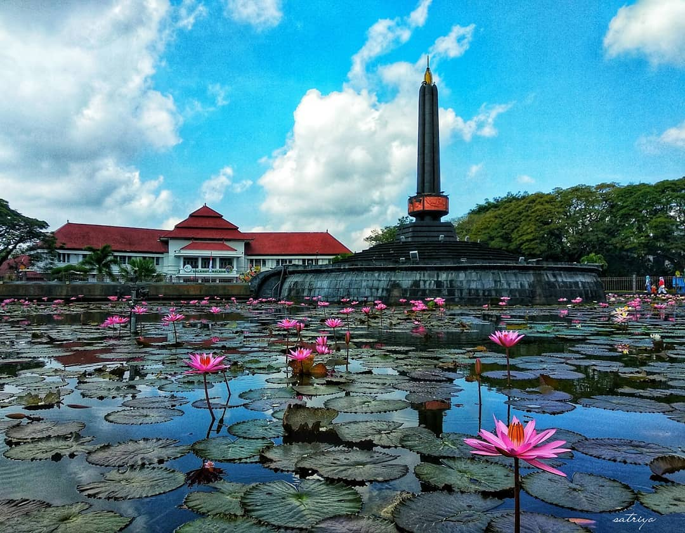

Malang
Malang dibagi menjadi dua daerah yaitu Kota Malang dan kabupaten Malang. Malang berlokasikan di Provinsi Jawa Timur,Indonesia. Antara Malang Kota dan Kabupaten memiliki kebudayaan yang sama walaupun mungkin ada sedikir yang berbeda.
Di sini akan disajikan beberapa hal mengenai kesenian tari, kerajinan, dan beberapa wisata yang ada di Malang.